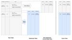

CADDi Tech Blog
https://caddi.tech/
キャディ株式会社のTechブログです
フィード
Kaggle の 5-day 生成AI 集中コースのキャッチアップをした話 3
3
CADDi Tech Blog
はじめに Kaggle の 5-day 生成AI 集中コースとは 感想 Day1: Foundational Models & Prompt Engineering Day2: Embeddings and Vector Stores/Databases RAG の構築 類似度・分類モデルの作成 Day3: Generative AI Agents Gemini で関数呼び出しをする方法 LangGraph を用いた AI エージェントの作り方 Day4: Domain-Specific LLMs Day5: MLOps for Generative AI まとめ この記事は CADDi プロ…
4日前
LLM as a judgeを利用して、デプロイ後の図面解析モデルの精度を追跡する方法を考えてみる with Generative AI on Vertex AI 1
CADDi Tech Blog
はじめに LLM-as-a-judge 対象のタスク 実験概要 実験概要 Generative AI on Vertex AIでの実装 評価結果の確認 追加実験 まとめ はじめに こんにちは、Analysisチームの宇佐見です。 こちらはCADDi プロダクトチーム Advent Calendar 2024 6日目の記事になります。 adventar.org 皆さん、機械学習モデルの精度を追ってますか?PoCの話ではなく、デプロイした後の話です。 CADDiが展開するCADDi Drawerの一機能の図面解析も機械学習を用いて行われており、デプロイしたモデルの精度が期待していたよりも低ければ図…
4日前

巨大JSONカラムをもつテーブルを最適化し、サービスレベルを下げずにBigQueryのクエリコストを90％カットした話 1
CADDi Tech Blog
この記事は CADDi プロダクトチーム Advent Calendar 2024の4日目の記事です。 Data Management チームの森岡です。要らなくなったものをすぐに捨てられるデータ基盤を意識して日々開発しています。 今回は、クエリコストを下げるための方針を体系的に整理するのと、BigQueryのクエリコスト削減施策の中でとくに効果が大きかった事例について紹介しようと思います BigQueryのクエリコストを削減する3つの基本方針 BigQuryの課金体系には、On-demandとCapacityの2つがありますが、CADDi ではOn-demandで利用しています。そのため、以…
6日前

Apache Camelの Saga と Cloud PubSubを組み合わせる
CADDi Tech Blog
この記事は CADDi プロダクトチーム Advent Calendar 2024の2日目の記事です。 Tech チームの前多です。個人的なことですが この一年で10kgほど減量しました。体重や食事量、活動量の記録と可視化を行って調整してきた結果だと思います。 人生もシステムもオブザーバビリティが大事ですね。 CADDi の技術スタックは採用サイトでも紹介されている通り、TypeScript, Python, Rustの比率が高めです。 一方でプロダクトや組織の拡大に合わせて、生産性の高い技術スタックの検討も行っています。 JavaおよびJVM関連技術も検討候補の一つで、私も3,4年ぶりくらい…
8日前
2025年度 Data&Analysis合宿レポート
CADDi Tech Blog
こんにちは、CADDiの図面解析チームで機械学習エンジニアをしている宇佐見です。 このブログでは先日行われたチーム合宿について書かせて頂きます。 はじめに 全体の流れ D&A戦略理解 & チーム説明 マシュマロチャレンジ ハッカソン 最後に はじめに CADDiは「製造業AIデータプラットフォームCADDi」を提供しています。 私が所属するData&Analysis部（以下、D&A）は文字通り集約されたデータを分析するのがメインの業務です。 Drawerに集まるあらゆるデータを対象とはしていますが、私が所属するチームは図面データ活用クラウドであるCADDi Drawerというプロダクトに集まっ…
21日前
Multimodal Large Language Modelを画像認識タスクへの適用
CADDi Tech Blog
はじめまして、CADDiの図面解析チームで機械学習エンジニアをしている藤田です。 CADDiでは、CADDi Drawerという図面データ活用クラウドサービスを提供しています。私の所属するチームでは、Drawer上にある図面画像から様々な情報を抽出する、機械学習モデルを作ることに取り組んでいます。その取り組みの1つとして、Multimodal Large Language Model (MLLM)というモデルを図面画像に適用し図面解析をするということを、PoCとして実施しています。今回、MLLMの取り組みについて紹介します。 Multimodal Large Language Modelとは？…
3ヶ月前
Istioのenvoyサイドカーをデバッグする
CADDi Tech Blog
SREチームの前多です。以前、Google Cloudが提供するサービスメッシュのAnthos Service Meshの入門記事を書きました。 caddi.tech この記事のまとめで私は、Istio (Anthos Service MeshのベースのOSS) を詳しく知るには、envoyのことをもっと知る必要があると書きました。 そしてサービスメッシュで何かエラーが起きているとき、それはサービスメッシュ自体ではなく インフラやアプリケーションのバグや設定ミスがサービスメッシュによってあぶり出されるということも述べました。 先日、サービスメッシュ上でPod間のgRPC通信が特定条件で失敗し、…
5ヶ月前
Platform Engineering Kaigi 2024 で「開発者向けドキュメントの改善」をテーマに登壇してきました
CADDi Tech Blog
こんにちは、Platform チームの @akitok_ です。 CADDi Platform チームでは、チームトポロジーの定義に基づいてストリームアラインドチームが自律的に仕事を届けられるようにするため、様々なアセットとそれに付随するドキュメントなどを提供しています。 Platform チームのミッションやその活動などについては、以下の記事などを読んでいただけますと幸いです。 なんでもやるがなんでもはやらない？CADDi の Platform チームは、何をするチームなのか？ - CADDi Tech Blog あれから 1 年、Platform チームのその後 - CADDi Tech …
5ヶ月前
MLの裏側を支えるアノテーション組織運営の実践禄
CADDi Tech Blog
はじめまして！ 機械学習チームでプロダクトマネジメントを担当している、井上といいます。 今回はCADDiにおけるアノテーションの組織づくりについて紹介します。 アノテーションについて調べると、データ生成や品質改善のノウハウはよく目にするものの、アノテーションを行う組織体制づくりに関する情報は中々見つかりません。弊社のアノテーション組織づくりがその一事例として、参考材料になればいいなと思います。 「紹介します」なんて言うとさもよくできた事例のように聞こえそうですが、実際は試行錯誤の日々です.....💦 アノテーションってなんなの？ アノテーションの組織づくりが必要になる背景 CADDiのアノテー…
5ヶ月前
アノテーションにおけるUIの工夫
CADDi Tech Blog
こんにちは、MLOpsチームです。先日OCRモデルを学習するためのアノテーションにおいて、作業効率を検証するためのPoCとしてアノテーションUIを開発しました。本記事ではこのアノテーションUIにおける工夫について、試用によって得られた知見をまじえつつ紹介します。 はじめに アノテーションUIを開発することとなった背景について説明します。 アノテーションUIとは アノテーションUIは機械学習の学習データを作成するためのUIです。アノテーションUIはアノテーション作業の効率に強く影響し、アノテーション作業によって得られる学習データの量は機械学習の精度に大きく寄与します。したがって、アノテーションU…
8ヶ月前
Tech BlogをWordPressからはてなブログに移行しました
CADDi Tech Blog
こんにちは。Platformチームの飯迫 (@minato128)です。 今回は、Tech Blogの移行について簡単に紹介したいと思います。 背景 キャディのTech Blogでは、これまでKistaのManaged WordPressを利用してきました。 主な採用理由は、「カスタマイズ性の高さ、マネージドで安全に変更を反映できる仕組みがあること」でした。 実際、KinstaとWordPressはカスタマイズ性が高く、他社と差別化されたデザインを採用できたことはよかったのですが、下記のような課題がありました。 記事公開までの手順がシンプルではない*1 Production環境へのデプロイ（記…
8ヶ月前
【LPIXEL×CADDi】Kaggle Masterとマネージャーが語るAI製品化の舞台裏【イベントレポート】
CADDi Tech Blog
みなさんこんにちは。キャディ（CADDi）でML/MLOpsチームのグループリーダをしている稲葉です。今日は、エルピクセル（LPIXEL）さんと一緒にオフラインイベントを開催しましたので、そのイベントレポートをお伝えしたいと思います。 はじめに イベントの詳細は、connpassのページをご確認いただけると幸いです。このイベントを開催するにあたってエルピクセルさんとも色々と議論したのですが、AIを製品として市場にリリースしているエルピクセル株式会社、キャディ株式会社からどういう点を意識してプロダクト開発しているかをお話すると実際の開発現場がイメージできるのではないかという話になりました。また、…
8ヶ月前
会計システムのアーキテクチャとモデリング ~会計というドメインを Rust で表現している話~
CADDi Tech Blog
はじめに こんにちは。 バックエンドエンジニアの松本です。今回は、会計システムの開発を通じて、 CADDi におけるプロダクト開発の様子を紹介します。 2024年3月現在、CADDiでは2つのサービスを提供しています。1つは図面データ活用クラウド「CADDi Drawer」で、もう1つは加工品製造サービス「CADDi Manufacturing」です。 今回、後者の加工品製造サービス「CADDi Manufacturing」向けに、 会計システムを構築しました。これは、生産管理システムや拠点管理システムから取得した各種情報を基にして、会計仕訳データを生成し、経理部門に公開する役割を持ちます。 …
9ヶ月前
RustでWeb APIを作る際のエラーハンドリング
CADDi Tech Blog
TL;DR エラーハンドリングを行う目的 エラーハンドリングが適切に行われているとどう嬉しいか 1. エラーの発生原因が分かる 2. レスポンスステータスを型安全に出し分けることが可能になる どうエラーハンドリングを行うのか 実装方法 エラー型の定義で気を付けるべきポイント なぜanyhowを利用しないのか エラーハンドリングを行う上で持っている課題感 Drawer Growth グループ バックエンドエンジニアの中野です。今回は、私が所属するチームで gRPC API を開発する際に実践している Rust でのエラーハンドリングについて紹介していきます。 TL;DR エラーの発生原因がわかる…
9ヶ月前
大量のSeedデータの管理基盤としてAirtableを活用したら開発体験が素晴らしかった話
CADDi Tech Blog
はじめに こんにちは。CADDiでバックエンドエンジニアとして働いている中山です。 今日は、プロダクト開発において大量Seedデータの管理基盤としてAirtableを使ったら開発体験が素晴らしかったのでご紹介しようと思います。 ※ 以下の内容はAirtableの契約プランによって機能が異なること、執筆時にはできないが今後機能が追加されてできるようになっている可能性があることはご了承ください。 はじめに 背景 Airtableとは Airtableでできること UI上で操作が完結し、データの追加/編集がサクサクできる 表計算ソフトでおなじみの便利機能がたくさんある Web APIでCRUD操作が…
9ヶ月前
モノレポの Python バージョンを 3.9 から 3.11 に上げる
CADDi Tech Blog
はじめに AI Team MLOps Engineer の西原です。前回は kubeflow pipeline(kfp)のローカル環境での実行について Tech Blog を書きました。kfp は 2024 年に入ってからローカル環境の実行以外にも嬉しいアップデートがあったのでそれに少し絡めて今回の取り組みを紹介しようと思います。 今回の取り組みは、モノレポで使っている Python の最低バージョンを 3.9 から 3.11 に上げるというものです。なぜ、バージョンを上げたのか、上げる際の障壁とその対応を紹介しようと思います。 はじめに なぜ Python バージョンを上げたのか パッケージ…
9ヶ月前
第10回:Cloudflareの紹介と運用のポイント
CADDi Tech Blog
※本記事は、技術評論社「Software Design」(2024年1月号)に寄稿した連載記事「Google Cloudを軸に実践するSREプラクティス」からの転載1です。発行元からの許可を得て掲載しております。 はじめに 前回はDatadogによるクラウド横断のモニタリング基盤について解説しました。 今回はCloudflareとは何か、なぜ使っているのか、各サービスとポイント、キャディでの活用例を紹介します。 ▼図1 CADDiスタックにおける今回の位置付け Cloudflare とは 本記事では、Cloudflare社が提供しているプラットフォーム全体を「Cloudflare」とします。 …
10ヶ月前
Kubeflow Pipelines の local 実行で開発効率を上げる
CADDi Tech Blog
はじめに AI Team MLOps エンジニアの西原です。2024 年 1 月にローカル環境で Kubeflow Pipelines を実行するドキュメントが公式から公開されました。今回はそのドキュメントを参考にローカル環境で Kubeflow Pipelines を実行する方法を紹介します。 はじめに Kubeflow Pipelines とは kfp を使った開発の課題 kfp を手元の開発環境で実行する ローカル環境でコンポーネント実行 アーティファクトを出力 任意のコンテナイメージを使ったコンポーネント GPU を使ったコンポーネント pipeline 実行 pipeline とは何…
10ヶ月前
第9回: Datadogによるクラウド横断のモニタリング基盤
CADDi Tech Blog
※本記事は、技術評論社「Software Design」(2023年12月号)に寄稿した連載記事「Google Cloudで実践するSREプラクティス」からの転載です。発行元からの許可を得て掲載しております。 はじめに 前回は、Google Cloudが提供するAnthos Service Meshを導入して、GKEで動くアプリケーションに可観測性やセキュリティなどの機能を追加する方法について紹介しました。今回はDatadog1を利用したモニタリング基盤について、Datadogの採用理由や基本機能、キャディでの活用事例を紹介します(図1)。 ▼図1 CADDiスタックにおける今回の位置付け D…
10ヶ月前
第8回: Anthos Service Mesh 入門
CADDi Tech Blog
※本記事は、技術評論社「Software Design」(2023年11月号)に寄稿した連載記事「Google Cloudで実践するSREプラクティス」からの転載です。発行元からの許可を得て掲載しております。 はじめに 前回はArgo CDによるKubernetesへの継続的デリバリについて紹介しました。今回は、Google Cloudが提供するAnthos Service Meshを導入して、GKEで動くアプリケーションに可観測性やセキュリティなどの機能を追加する方法を紹介します(図1)。また、本記事に関するサンプルコードについてはGitHub1を参照してください。 ▼図1 CADDiスタッ…
1年前
SaaSのSREチームを立ち上げました
CADDi Tech Blog
本投稿はSRE Advent Calendar 2023の19日目の記事になります。 こんにちは。SREチームの矢野(@yymm)です。 今年の4月からCADDi DRAWERのサービス信頼性向上のためSREチームが活動を始めています。チーム立ち上げから3Q経過して方向性も見えてきたため改めて立ち上がりから今までのことを紹介します。 CADDi DRAWERについて 図面データ活用クラウドのCADDi DRAWERは、2022年6月に正式にローンチされました。 ローンチから1年半経過し取り扱うデータ数のオーダーやユーザー数が拡大してきており、機能面の拡充はもちろんのことですが、非機能要件の重要…
1年前
第7回: Argo CDによるKubernetesへの継続的デリバリ
CADDi Tech Blog
※本記事は、技術評論社「Software Design」(2023年10月号)に寄稿した連載記事「Google Cloudで実践するSREプラクティス」からの転載です。発行元からの許可を得て掲載しております。 はじめに 前回はRenovateによる依存関係の更新について解説しました。今回はArgo CD1を利用した、Kubernetesへの継続的デリバリ(Continuous Delivery、CD)について紹介します。Argo CDとは何か、なぜ使うのか、基本的な機能やキャディでどのように活用しているかを紹介します(図1)。 ▼図1 CADDiスタックにおける今回の位置付け Argo CDと…
1年前
第6回: Renovateによる依存関係の更新
CADDi Tech Blog
※本記事は、技術評論社「Software Design」(2023年9月号)に寄稿した連載記事「Google Cloudで実践するSREプラクティス」からの転載です。発行元からの許可を得て掲載しております。 はじめに 前回はTerraformとGitHub Actionsで実践するインフラCI/CDについて解説しました。 今回はRenovate1を利用した、ツールやライブラリの依存関係更新について紹介します(図1)。 なぜ依存関係を更新する必要がある必要があるかという背景から、Renovateのしくみの解説と利用方法、更新の運用を手軽に行うためにキャディで取り組んでいることを紹介します。 ▼図…
1年前
SRE NEXT 2023 に参加しました
CADDi Tech Blog
こんにちは。DRAWER SRE（Site Reliability Engineer） の廣岡です。最近は DRAWER サービスを運営する上での SLI/SLO 、エラーバジェットポリシーの策定や、モニタリングの整備などを進めています。 DRAWER SRE チームでは、リライアビリティの推進事例やプラクティスへの理解を深めるため、SRE NEXT 2023 というイベントに参加・聴講しました。本ブログはこの参加レポートになります。少しでもイベントの雰囲気を感じていただけると幸いです。 SRE NEXT とは SRE NEXT は、SRE などのサービスの信頼性構築やその維持・改善に関心を持…
1年前
チームワークショップで採用面接を見直した話
CADDi Tech Blog
こんにちは。CADDi DRAWERでMLOpsチームのチームリードをしている中村遵介です。 チームリードは技術に関して多方面の意思決定を行ってチームの成果に貢献するテックリードと異なり、チームのメンバーや組織に関する意思決定を行ってチームの成長に貢献します。貢献したいです。頑張ります。 最近では、機械学習メンバー/MLOpsメンバーの採用を積極的に行っています。チームメンバーも採用に対してもっと関わっていきたい、と普段から活動してくれています。 私たちのチームでは採用に半構造化面接を用いています。どういう観点でどんな質問をするのか、を予め決めています。 しかし、メンバーの期待している人物像に…
1年前
Cloud Data FusionをIaCで構築し、データパイプラインのマイグレーションを行いました
CADDi Tech Blog
はじめまして。CADDiでバックエンドエンジニアとして働いている中野です。 この記事では、Cloud Data Fusionを利用して作成したデータパイプラインについてご紹介します。 TL;DR SalesforceとBigQuery間のデータ連携にHeroku Connectをこれまで利用していたのですが、Cloud Data Fusionに乗り換えることでダウンタイムなしで約1/8までコストダウンができました。 モチベーション 弊社では、Salesforceに溜まったデータをBigQueryに連携し、営業などのBizサイドの組織も含めアクセスできる状態にしております。これまでは連携に He…
1年前
第5回:TerraformとGitHub Actionsで構築するインフラCD
CADDi Tech Blog
※本記事は、技術評論社「Software Design」(2023年8月号)に寄稿した連載記事「Google Cloudで実践するSREプラクティス」からの転載です。発行元からの許可を得て掲載しております。 はじめに 前回はTerraformとGitHub Actionsで実践するインフラCI/CDのCI部分について解説しました。今回はその続きとなるCD部分、デプロイについて扱います。また、運用をよりスケールさせるために検討すべき観点やキャディでの事例についても紹介します。 terraform applyの実行 前回はPull request(PR)に対してterraform planを実行し…
1年前
CADDiで4年間働いたエンジニアがプロダクトの変遷について話してみる
CADDi Tech Blog
こんにちは、キャディでエンジニアやエンジニアリングマネージャをやっている高藤です。 久しぶりのTechブログへの投稿です。 今回はタイトルにあるようにCADDiで4年働く上で起きた事をエンジニア視点でまとめつつ、これから何をしようとしているのか私自身の思いを込めて書いてみようかなと思います。 4年前のあのころ 私は2019年2月に入社し、4年強の期間CADDiで働いてきました。私が当時CADDiに興味を持ったのは、単純に面白い経歴のCEOとCTOがなぜ日本で起業したのかという興味と私自身が成長できる環境で働きたいという2点でした。 正直な話、CADDiが対象とする、製造業ドメインへの興味は全く…
1年前
Pantsモノレポの改善~テスト時間短縮・依存の集約管理・pex~
CADDi Tech Blog
MLOps Team Tech Lead の西原です。以前のTech Blogで Pants を使った Python モノレポ移行への取り組みについて紹介しました。日々の業務で得た知見を Python コミュニティに共有できるといいなと思い、PyCon APAC 2023に「Pants ではじめる Python モノレポ」というタイトルで CfP を提出し採択されました。この記事では、PyCon APAC 発表に向けての整理も兼ねて、Pants を使ったモノレポの管理・運用を効率的に行うための取り組みを一部紹介します。 TL;DR CI の待ち時間を短縮する リモートキャッシュの活用 テストの…
1年前
第4回:TerraformとGitHub Actionsで構築するインフラCI
CADDi Tech Blog
※本記事は、技術評論社「Software Design」(2023年7月号)に寄稿した連載記事「Google Cloudで実践するSREプラクティス」からの転載です。発行元からの許可を得て掲載しております。 はじめに 前回はTerraformの基本的な概念とステート管理について解説しました。 今回からは 2 回にわたり、Infrastructure as Code(IaC)のCI/CD(継続的インテグレーション/継続的デリバリ)パイプラインについて紹介します(図1)。 ▼図1 CADDiのスタックにおける今回の位置付け Google Cloudプロジェクトのインフラ構成をTerraformで定…
1年前